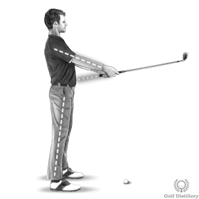
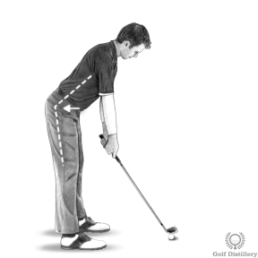
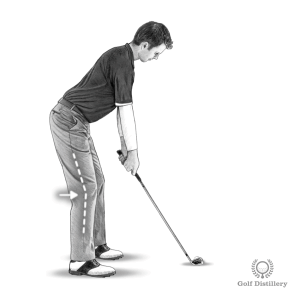

완벽한 골프 자세

--------------------------------------------------------------------------------------------------------------

팔과 다리를 곧게 펴고 배꼽 앞에 클럽을 잡습니다. 어깨를 뒤로 젖힌 채 똑바로 서서 가슴을 내밀어 보세요
--------------------------------------------------------------------------------------------------------------

엉덩이 부분만 기울어지도록 앞으로 기울입니다 . 허리는 둥그스름하지 않고 편평한 상태를 유지해야 합니다. 등을 뒤로 밀고 있는 듯한 느낌을 줍니다
--------------------------------------------------------------------------------------------------------------

클럽이 공 뒤의 지면에 닿기 위해 내려갈 때 무릎을 살짝 구부립니다(사진 3). 무릎을 과도하게 구부려서 많은 아마추어 골퍼들이 저지르는 실수를 피하십시오.
--------------------------------------------------------------------------------------------------------------